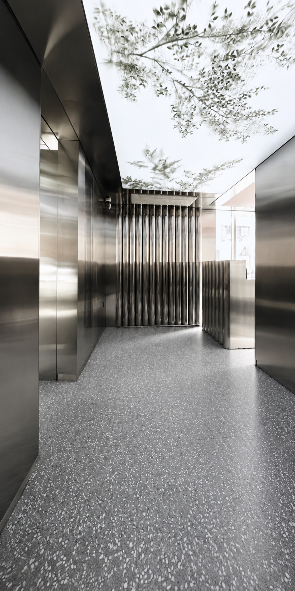
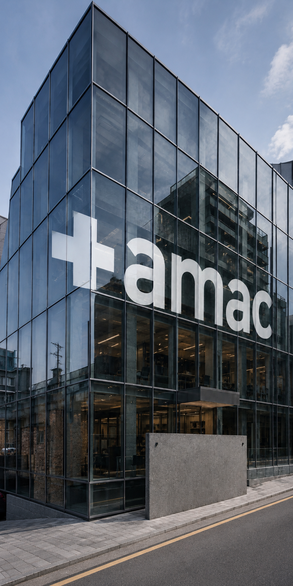
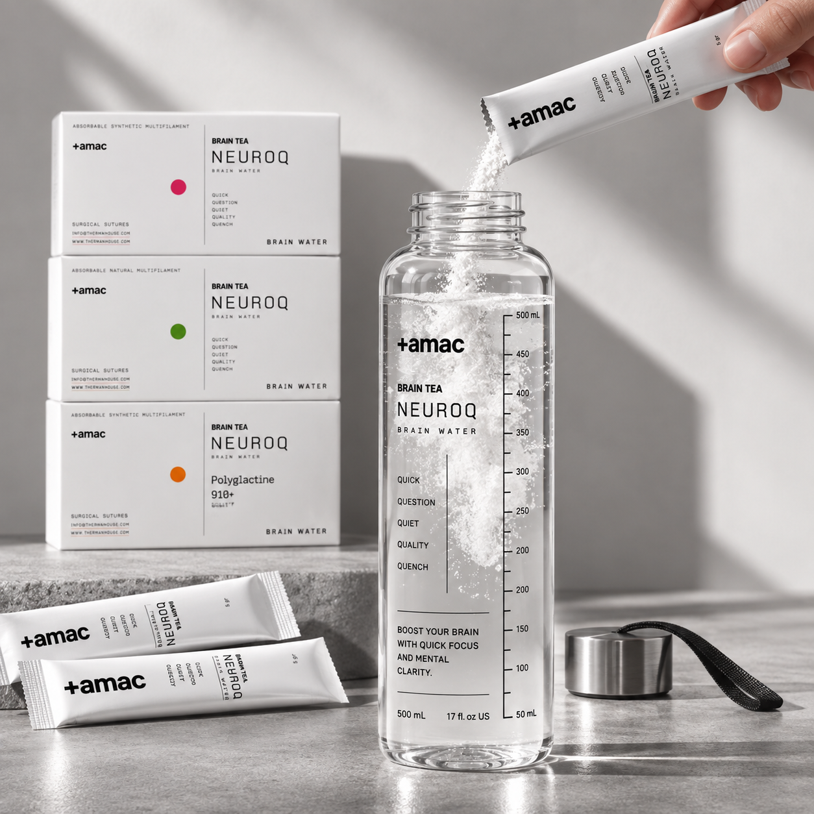
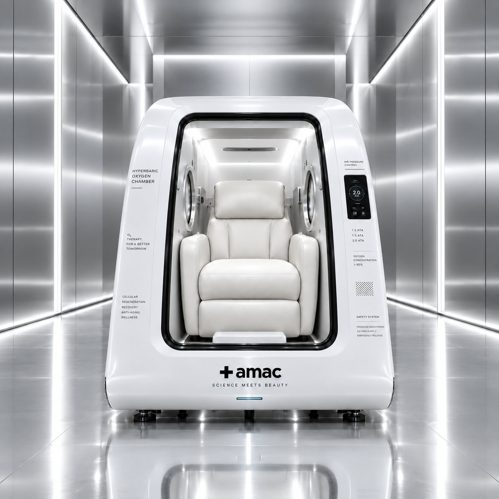
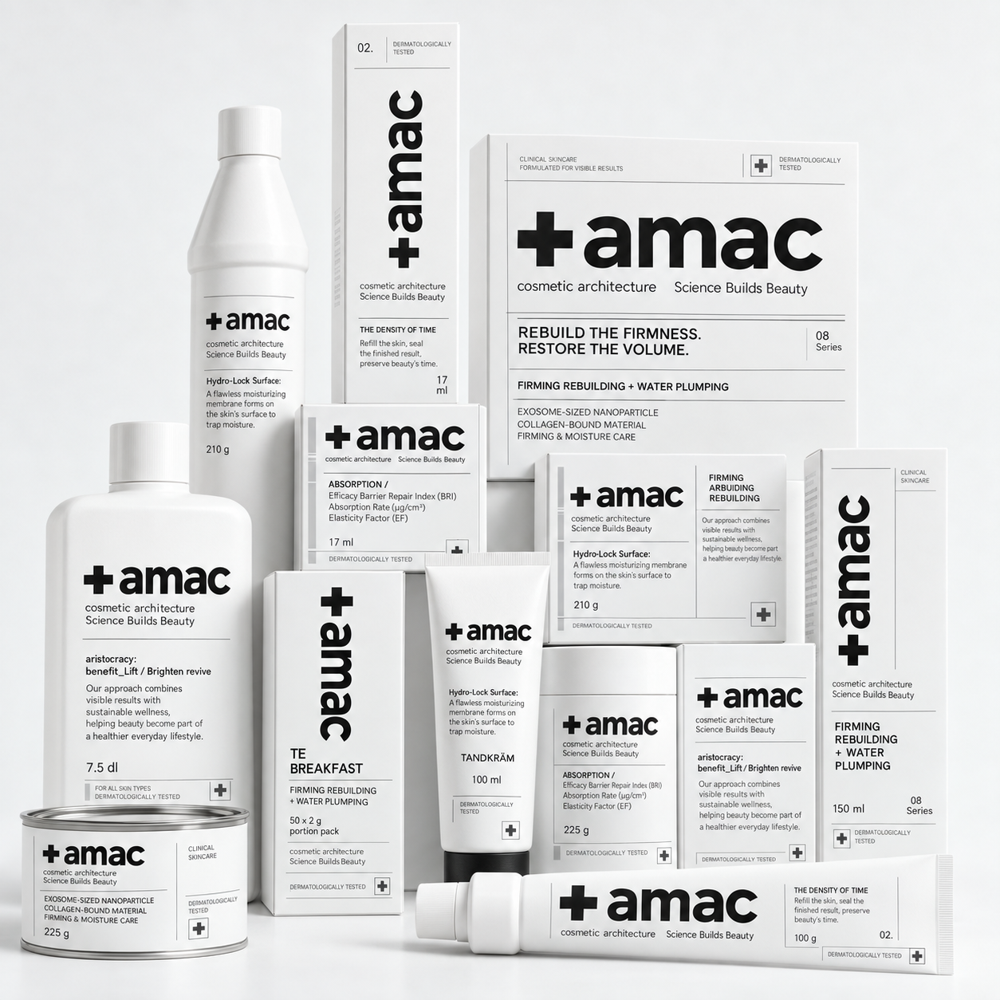

Nestled in Japan's pristine nature, Therman Wellness Resort delivers an unparalleled high-end retreat focused on mind-body rejuvenation, bespoke healing therapies, and refined Japanese hospitality.
Personalised treatments, neurocosmetic care,
inner beauty and restorative technologies come together
as one integrated approach to wellbeing.
Neurocosmetic Care

AMAC SPA
Thermal bathing and hands-on care, drawn from the water on site.
View AMAC SPA
Care, Connected
AMAC considers beauty in relation to the whole person. Skin,
physical condition, hydration, recovery and mental clarity are never treated as separate concerns.
Personalised spa treatments, neurocosmetics, functional hydration and advanced recovery technologies come together as one connected approach to wellbeing.
Built on Science
Science provides the foundation, but individual condition determines the experience. AMAC brings research-led formulas and restorative techniques into rituals shaped around real daily needs.

A Cue to Focus
NEUROCUE turns hydration into a simple focus ritual. One stick mixes with water, bringing together measured caffeine, L-theanine and low-sugar electrolytes.
A clear and uncomplicated way to pause, hydrate and prepare the mind for what comes next.
Wherever the Day Leads
From morning work to afternoon fatigue and active moments outdoors,
NEUROCUE creates a portable cue to return to a clearer rhythm.

Recovery, Under Pressure
Within the oxygen chamber, elevated pressure and complete stillness
create a controlled environment for deeper rest.
Integrated into a personalised recovery programme, each session gives the body space to
slow down and the mind an interval away from constant stimulation.
Care Shaped Around You
Every AMAC SPA journey begins with the present condition of your skin and body. Products,
pressure and treatment sequence are carefully adjusted by expert hands.


The Ritual Continues
AMAC Neuro Cosmetics are inspired by the connection between skin,
stress and sensory experience. Advanced formulas support hydration,
resilience and visible vitality through textures created to feel intuitive on the skin.
The care experienced at AMAC continues at home as a quiet,
consistent part of everyday life.